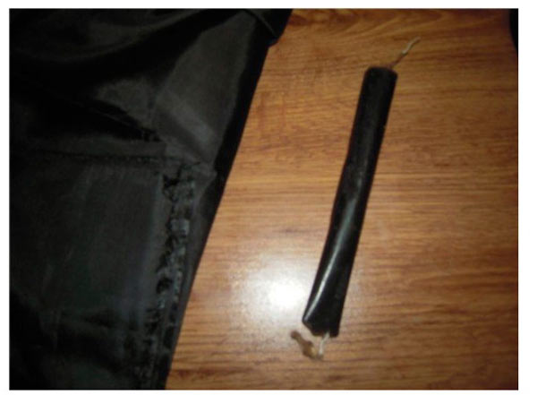
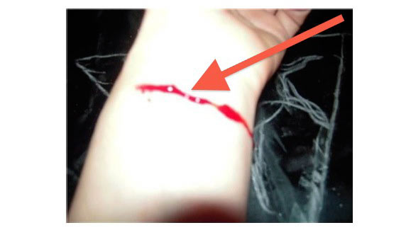
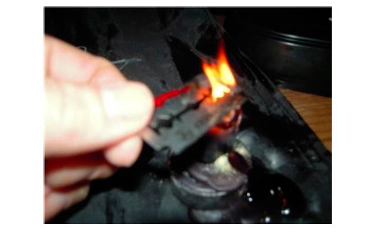
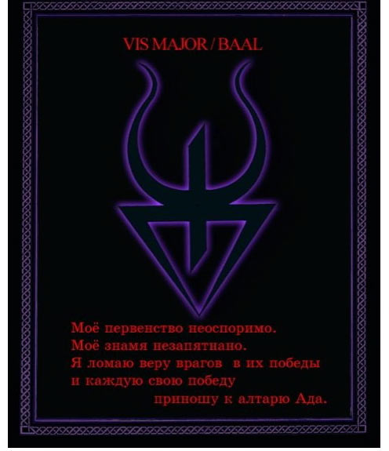
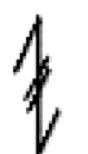
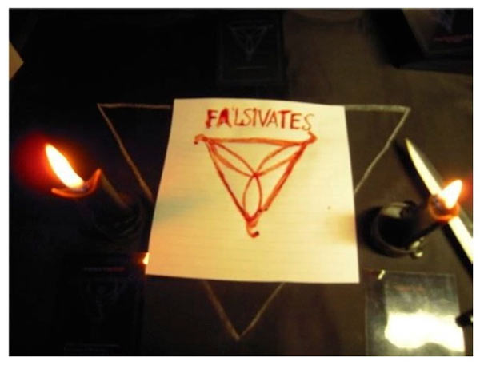
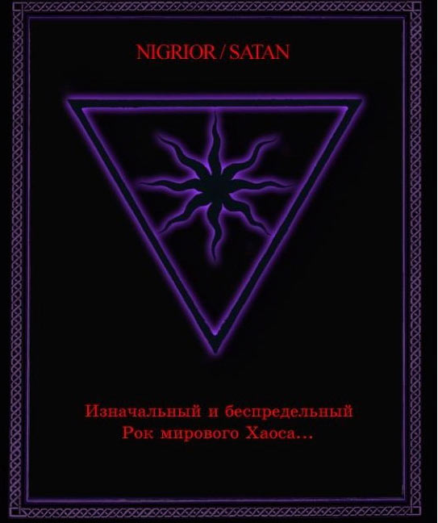
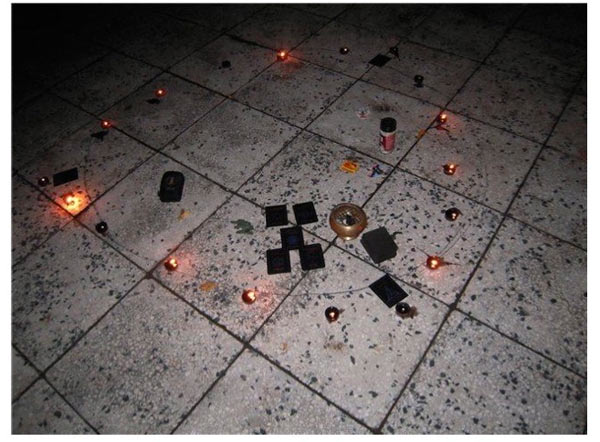

Inferion: Дневник работы с колодой
(как не надо проводить ритуалы)
Прислали пример опубликованного ритуала с комментариями. Что ж, хороший пример для разбора. Мои комментарии -- как всегда.
Комментарии The Eternal Ruler выделены так.
Продолжение -- ответы на ответы, так что получилось немного запутанно, извините :)
JUDEX "Ответ Варраксу". Ритуал с этого сайта был перепечатан на сайте Black Fire Pandemonium и прокомментирован его администратором - Варраксом и другом администратора- Джином.
С чего вдруг решили, что The Eternal Ruler и Gene - один и тот же человек? Inferion шепнул?
Более того: я не "администратор сайта"; это -- мой личный сайт. Ничего не понимаю (с) "Колобки".
Но куда более интересно другое: писали вдвоем, но "ответ" почему-то мне лично. И подобное далеко не в первый раз, что очень четко указывает на мотивации "как это именно Варракс смеет меня критиковать", а вовсе не на желание разобраться в критике (и аргументированно ее опровергнуть, либо согласиться и подправить).
Вообще, первое, что следует отметить - это наглость вставлять свои правки в магический текст.
О, так это магический текст был???
Я, честно говоря, вообще слабо понимаю, что такое "магический текст" и какие такие у него свойства, чтобы его нельзя было править. Варианта вижу два.
Первый: "именно такой текст, конкретно в этом виде, мне помогает в оккультной работе". Но в этом случае не может быть возмущения правкой другого под себя -- у него-то несколько иное восприятие.
Кстати, не понял. Ни я, ни The Eternal Ruler текст не правили -- мы его слегка откомментировали, по ключевым ляпам.
Второй: "это такое заклинание, которое, если произнести точно так, как написано, обязательно подействует у любого, и никому нельзя его никак изменять, так как не будет работать". С этим -- к Дамблдору в Хоргвартс.
И опять не понял: а что, всякое там "выключить свет и все электроприборы в доме" -- это магический текст, да?
Можно было написать рецензию в целом.
И уложиться в два слова.
В одно. Хотя, если с прилагательным, то два.
Однако, у Варракса не было веских причин разбирать каждую фразу.
(пожимая плечами) Я и не разбирал каждую. Обозначены основные ляпы, которые относятся к "начальным классам" оккультной работы.
Позже мы увидим, что главная цель была не найти ошибки, а придраться и низвести магический текст до материального уровня. Что в общем-то не получилось. И все таки я решила не оставлять резензию Варракса без комментариев.
Было бы всё равно, то промолчали бы.
Все рецензии, отзывы и мнения о работах опубликованнных на нашем сайте буду теперь размещать в этой рубрике и комментировать. Итак,
Много чести. Сейчас ещё разик напишем, и хватит. У нас и без вас дел навалом.
На ошибки указали (чтобы другие так не лажали, а перевоспитывать автора никто не собирается), сейчас укаэем на то, что они были не случайны, и ладно.
Автора и место публикации удаляю -- ничего личного, тут важно разобрать суть ошибок, а кто их изобрел и опубликовал -- мне все равно.
Начнем с того, что слово ошибка в магии - это понятие очень субъективное. Что для одного оператора, практикующего в традиции Х - будет ошибкой, то для другого, практикующего в традиции Y - успешным магическим действием. То есть судить об ошибках можно 1) по результату 2) по негативным (побочным) эффектам.
Если на молитву был дан ответ, а просьба, высказанная Иисусу, удовлетворена, значит, в церковь имярек сходил не зря. Вот такая тут «логика».
Кроме того, никто не спорит с тем, что можно провести ритуал "как в голову взбредет", если так спонтанно получилось. Помнится, как-то читал, что Алистер Кроули во время ритуала забыл слова и просто прочел стихотворение, более-менее подходящее по смыслу, чтобы продолжить. Про него же читал (жаль, не помню, где), что он как-то продемонстрировал собравшимся, что не надо зацикливаться на зазубривании "имен" и "воззваний", просто пафосно прочтя телефонный справочник вместе "магического текста" -- и все сработало. Из личного опыта еще 90-х гг. -- спонтанный ритуал проводился со свечами, натертыми пеплом (серым, соотв.) от Библии и вместо Чаши использовалась хрустальная салатница, причем с пивом. Всякое бывает (и работает), но наставать на том, что именно так и надо делать -- это совсем другая история (с).
Впрочем, смотрите сами на аргументацию далее.
Если результат ритуала был получен, а отрицательных явлений не наблюдалось - значит ритуал был проведен правильно. следовательно, Варракс как порядочный сатанист должен был написать статью: "Как бы я провел данный ритуал".
Я бы данный ритуал никак не провёл :-)
Но Варракс человек непорядочный и решил попиариться за счет чужой магической работы, пытаясь выставить себя как опытного эксперта.
Телепатов-то сколько вокруг, куды бечь?..
Согласен, данный -- нафиг-нафиг. Что-то из серии "а я размахивал оружием, направлял и на себя, и ничего не проихошло с моей т.з., так что кто против -- пусть сначала сам так сделает". Суть в том, что уже произошло: так делать небезопасно.
Кстати говоря, мы там ниже отметили пару моментов, которые явно указывают на странности мировосприятия с сатанинской т.з. "Вера, Божественный Мир рассоздать, себя в жертву..." и т.д. Разумеется, нельзя сказать, что это именно из-за этого ритуала, но оно очень взаимосвязано: принципиальные ошибки в оккультной работе и в мировосприятии растут из одного корня.
Расписывать ВСЕ подобное цели не ставилось, т.к. мы "расставляли вешки", не более того. Но "отрицательных явлений" там наблюдается предостаточно.
Перед началом работы отливаются две чёрные свечи. Приблизительно такие:

Желательно делать их на тёмную луну или новолуние, хотя на убывающую получается тоже неплохо. Время — между часом и двумя ночи. Для ритуала готовятся заранее:
- ритуальный нож,
- свечи,
- спички,
- чаша,
- листы бумаги,
- ручка,
- сера (желательно),
- бритвенные лезвия (опасные). примечание в скобках, видимо, для полных дебилов :-)
JUDEX: Бритвенные лезвия бывают разные мне доводилось резаться не очень острым лезвием - сомнительное удовольствие, скажу вам. А как затрудняет проведение обряда. Так что лучше позаботиться заранее о новом остром лезвии.
Мне показалось, или JUDEX только что расписался в том, что он полный дебил?
Откуда может взяться не очень острое бритвенное лезвие? Ответ: только если оно б/у. Использовать в ритуале лезвие, которым брились... ну или карандаши точили... Вот такие сейчас оккультисты, ага.
Надо иметь все магические принадлежности — или же не иметь их вовсе. Когда всё готово и пришло время «работы»,
Кавычки-то зачем? Работы, с большой буквы «Р».
В общем виде: часто в таких случаях работает бессознательное. По тому же механизму многие цепляются за "сатанизм -- это религия", причем даже в виде "безрелигиозная религия, но все равно религия!". А покопаешься -- вера всенепременно, и поклонение где-то рядом... Вот и тут -- мне бы в голову никогда не пришло написать оккультную работу в кавычках, смысл совсем другой. В кавычках -- это именно что НЕ работа. В данном случае, как будет видно далее, это лишь медиумическое восприятие без осмысления, причем весьма странно проведенное.
JUDEX: Магическая работа пишем без кавычек, а просто работа можно и в кавычках.
Логика хромает на две ноги. Кто-то в начале писал о наглости внесения правок в магический текст, нет? Определитесь - это «магический текст», или «просто работа»?
А вообще не надо пытаться приходить к Сатане с излишним пафосом, завышенной оценкой собственной значимости и личных заслуг. Есть такие магические моменты, когда нужно быть поскромнее. И особенно общаясь с Inferno.
Учтём, thanks.
При чем тут пафос? Все просто, даже в оккульте ничего понимать не надо, просто сравните фразы:
- я делаю работу
- я делаю "работу"
...и все. Достаточно знания русского языка: как раз работа в кавычках -- это неуважение в данном случае. Даю справку:
| Анна А. Зализняк
СЕМАНТИКА КАВЫЧЕК |
Обратите внимание: не указано, зачем, в каком смысле применялись кавычки. Вместо этого -- какой-то странный наезд. Не, в самом деле, а что означают кавычки в данном случае?!
Я с тобой "дружу", я тебя "уважаю", я на работе "работаю" -- ИМХО все очевидно. И раз это заявляется магичеким текстом, который менять нельзя, эти кавычки не случайны, они важны.
надо освятить место (алтарь), на котором работаете,
Освятить? Я, конечно, понимаю, что иногда слова сложно подобрать. Но сатанист, который нечто освящает -- это как-то странненько. Мягко говоря.
А причиной всему -- безблагодатность попытки сделать из сатанизма религию.
JUDEX: В язычестве освящать ритуальное пространство нормально, а в сатанизма значит неприемлимо? Это назвается придраться к словам. Попытки сделать из сатанизма религии они в сознании Варракса на уровне навязчивой идеи. Здесь ничего из Сатанизма не делается. Проводится инфернальный обряд.
Ну так подберите подходящее слово. Что мешает?
Очень интересно, что это за "инфернальный обряд", в которогом нет ничего из сатанизма?! Ну и странно как-то забывать, что язычество как религия -- это нормально, а вот сатанизм -- нет. Как-нибудь распишу ОЧЕНЬ подробно, а пока вот тут см., кому не понятно.
И ответа, как можно освящать сатанинский алтарь -- нет. Ну в самом деле: что, "святой сатанинский алтарь" -- нормально, да?
выключить свет и все электроприборы в доме
Плохому танцору вечно (что-то) электроприбор мешает. Надо во всём районе пробки вырубить и окрестные педовни нейтрализовать, а то вечно от них всякие ангелы летают :-)
Это еще ничего. Мне рассказывали, как в некоей группе было принято перед началом ритуала ангелов разгонять -- мол, летают и мешают.
Если серьезно, то рекомендуется выключить телефоны, чтобы не было неожиданного звонка. Ну или если что-то конкретное мешает -- скажем, старый холодильник, который издает звуки трактора. А вот выключать все -- странно. Если делать ритуал в лесу -- то что, там надо вокруг все листья/веточки подмести? Ритуал должен проводиться в естественной обстановке, для квартиры электроприборы -- естественны. Многие работают с музыкальным фоном, так что -- на патефоне пластинку крутить?
Примечание: если вам конкретно так лучше -- то, разумеется, выключайте. Возражение -- против "всем и только так" надо.
и сесть поудобнее перед алтарём (я обычно работаю лицом на восток).
Как раз в ту сторону недоучки и работают, если они, конечно, не Сатанисты Люциферианского толка (не путать с MLO).
Точнее: направление можно варьировать в зависимости от смысла конкретной работы. Но "обычно на восток" -- как-то странно. Люцифер как "звезда утренняя" в практике требуется редко.
JUDEX: Лавей ритуальную практику проводил в соответствии с личными убеждениями.
Да ну?
По его же теории он был 12 часовым, огненным, значит его алтер эго и его демон - вода, значит Левиатан, значит на запад.
В огороде бузина, в Киеве дядька.
Вообще-то, направление -- оно в зависимости от задачи выбирается. По стихиям. Какое отношение имеет у этому тип телосложения по "Сатанинской ведьмы"?
Алтарь -- это "куда / к кому обращаешься", а не "смотрите, какой я красивый в этом направлении".
Но не все же того типа темперамента что и Лавей. Основатель Церкви Сатаны предлагал каждому посмотреть как делает он и выбрать свой Путь, найти свой прикол. Недоучки как раз тупо копируют ЛАвея и возводят направление на запад в ранг одного из постулатов Сатанизма.
Чуть ниже...
Так что не надо нервничать, все читали, все учили но делаем так как нравится.
И называем то, что взбредёт в правую пятку Сатанизмом :-)
Лично я люблю восточное направление и при первой возможности работаю туда.
Тут и до «правильной» пентаграммы недалеко. Впрочем, как подсказывает зал - уже.
Я-то думал сначала согласиться -- мол, тут как-то придрались зря, раз не было "только так всем надо", а просто личное -- мало ли зачем ритуалы делаются, может, и на восток надо по большей части. Но вот такое -- и как аватар? От типа сатаниста, да еще пишушего "как надо проводить ритуалы"?! Может, еще гексаграмму вместо пентаграммы использовать? Сразу понятна и "работа" в кавычках, и "на восток обычно"...
Однако, в Inferion большая часть работ проводится все таки на Север, об этом чудо-критики не обмолвились ни словом.
А должны были?
Inferion -- это набор порталов. И в них нет указания "использовать только в северном направлении", вообще-то.
Расставить свечи по обе стороны перед собой и таким образом установить Врата Ада
Не «установить Врата Ада», а символически их обозначить. Я сейчас нарисую на полу IXAXAAR и выйду за пивом. Вернусь - дома Ад, ага... *мечтательно* А было бы здорово :-)
JUDEX: А если через них можно пройти сущностям причем в обоих направлениях, то почему же не Врата. Врата еще какие.
Им про Фому, они про Ерёму.
Судя по этой реплике -- без таких вот врат Ад не справится никак, ага.
(расставлять и зажигать свечи надо, начиная с левой, все последующие манипуляции со свечами также должны начинаться с левой).
Эпичнейший фэйл прямо в самом начале Работы -- начать двигаться по часовой стрелке и весь ритуал ещё и продолжать это делать :-)))
Да уж (с) К. Воробьянинов. Вот все же элементарно: сатанизм, Тьма, направление -- на закат, движение противосолонь. Первый раз слышу, чтобы ритуал сатанистом (и вообще Тёмным) делался посолонь.
Очень похоже, что берется первая ассоциация без осмысления -- мол, Путь Левой Руки, с левой свечки начинаем. А что идем в результате направо -- так это уже вторая мысль, в голове не умещается.
Вот насколько нужно быть в отчуждении, чтобы не осознавать таких простых вещей? Это не «постулат Сатанизма», это не «личный глюк ЛаВея». Это в системе «by default».
JUDEX: Во-первых, иногда это вполне естественно зажигать свечи с левой, просто потому что с правой зажигают иудейские белосветники.
Вы ещё и в сортах говна разбираетесь?
Раввин Варракс само собой недоволен.
Аргументация на исходе.
Во-вторых, многие темные языческие и сатанинские ритуалы движутся посолонь начиная от скандинавского ритуала очищения пространства Молотом Тора и заканчивая Великим Континумом.
Начинать надо - противосолонь. А потом хоть на руках стойте.
Впрочем, в Via Infernali указано как правильно зажигать свечи. Для сомневающихся! внимательно прочтите книгу.
Я что-то не понял. А что, если в Via Infernali что-то написано, то это априори верно?
Смотрим текст: "Принимая Inferion безусловно и непосредственно, как картину единственной реальности желаемого существования и развития" -- все, можно дальше не читать, обычное сектообразное "наша Истина истиннее всех, так как она наша".
Inferion как систему порталов я лично очень уважаю. Скавр здесь просто гениален, смог построить именно систему, причем очень даже работающую -- проверял лично. Да, она получилась слишком "нигредистая", но если это учитывать и не вляпываться куда не надо, то очень хороший инструмент. Но вот сделать из этой системы "инферальную мантику" (Via Infernali)?! До такого извращения еще додуматься надо было...
Листы бумаги положить перед собой (между Вратами), там же и ручку, чашу — слева сбоку, — в неё будут ложиться все использованные ингредиенты (опалённые спички, лезвия, обрывки бумаги, огарки свечей и пр.),
Ы???!!! Всю жизнь из Чаши все пили, теперь некий «эксперт» заявляет, что в неё надо «отходы производства» класть. Пепельницу чёрную поставить -- и то не так провально... ппц...
И "огарки свечей" понравились -- это предполагается сколько времени ритуал вести?
JUDEX: Чаши бывают разные.
Жёлтые, синие, красные.
Как уже поняли чудо-критики, данная не предполагалась для приема ритуального напитка. Свечи так же бывают разные, зависит от качества воска, сквозняков или ветра и т.д. Есть такие свечи, которые сгорают за час. В конце-концов, огарки все равно останутся по окончанию работы. Вот как раз удобно сложить их в чашу.
Назовите всё же этот предмет по-другому...
чтобы ритуальное пространство было чистым.
Значит, использованная в ритуале свеча или там лезвие становятся "грязными"? ппц...
JUDEX: Чтобы ничего не валялось, не отвлекало и не мешало.
Там так и было написано - «плохому танцору...»
Все же идея включить в ритуальные принадлежности мусорную корзину, назвав ее чашей, впечатляет.
Рядом с чашей — ёмкость с серой.
Если вы решили использовать в ритуале серу или, скажем, полынь -- то надо поджигать, а не просто раскладывать.
JUDEX: Для особо одаренных - жаровня/кадильница/угли - предполагаются.
Это мы поняли :-)
После зажигания свечей в "светлом" направлении, мусорной чаши и проч. -- я уже ничему не удивлюсь. На телепатию же не претендую.
Карты держать прямо перед собой.
Зажигаются свечи и открываются Врата Ада. Идёт приветствие и просьба на разрешение начать работу.
С каждым абзацем всё шедевральнее и шедевральнее. Впервые слышу, чтобы кто-то обращался к Силам: «Вы меня извините, я тут немного замутить хотел, можно?». Что там классик писал об опасениях скулящего щенка?
Правильное писал: "заклинания сочинены, дабы служить воззваниями уверенности, а не опасениями скулящего щенка".
JUDEX: Обратиться к Аду и выразить свое желание. (с) Via Infernali.
Одни недоучки тупо копируют ЛаВея, это, значит, нехорошо. Другие доучки вдумчиво копируют Via Infernali, и это есть гуд. Пишете, но нифига не читаете даже собственный текст?
Предполагается обратиться со всей полнотой вежливости и уважения. Если вежливость расценивается критиками как слабость то их показная уверенность может быть расценена Адом как неосмотрительная бесцеремонность.
А если уверенность не показная, а обоснованная?
Все просто: когда я захожу домой, то я, конечно, здороваюсь с присутствующими, но разрешения зайти не спрашиваю. И даже на место работы -- аналогично.
Разрешение "можно?" спрашивают на чужой территории. Сатанист в Аду -- свой. Дома, образно говоря.

Никакой спешки и полная тишина вокруг.
Я же говорю -- плохому танцору...
Важно: ритуалы "на показ" не делаются. Конечно, никто не запрещает сфотографировать ритуальные принадлежности, но не во время же ритуала!
Очень "говорящее" указание на то, что ритуал понимается не как внутренняя работа, а как просто некая последовательность действий, при которой от оккультиста ничего не зависит. Мол, поприветствовали, получили разрешение начать работу, потом -- разрешение пофотать вокруг, ага... Типа уже пришли разрешатели, подождут, пока фотосессия идет.
JUDEX: Ничто не должно отвлкатать от общения. Да, ритуалы нельзя фотографировать, нужно как Варракс - снимать на видео и показывать по НТВ.
Вот ведь боян-то вспомнили, при этом делая вид, что вашего текущего шапито в природе не существует.
Суть в другом -- по НТВ я ритуал не проводил. Я показывал, как не надо делать, и кое-что -- как надо (где пилиться, чтобы не пораниться), но никакого ритуала не было и близко. Позиции "оккультная работа не должна записываться, фотографироваться и т.д." я придерживаюсь с самого начала. Причем снималось это все для другой программы, которую так и не сделали, а фрагмент пустили в другом контексте и мне даже не сообщили.
А вот как можно проводить ритуал, отвлекаясь на фотографирование, мне не понятно.
Берётся лезвие и делается надрез на левой ладони или запястье.
Только не там, где на фото я стрелкой ткнул. Интересно, сатанисты-эмо бывают? Про Орден Печальных Сатанистов у Варракса где-то было :-)
JUDEX: Каждый режет там, где удобнее. В Via Infernali сказано:
Это у вас библия?
"Дар крови утверждает ваши намерения." Это дар и Дьяволу важен прежде всего смысл сего дара а не то, с какой части ладони, кисти или левой руки в целом взята кровь.
Кровь -- это символ своей Жизни. Единой с Адом, поэтому и используется как Символ. И нечего Дьявола с вампирами путать.
С "кому где удобнее" спорить странно, но еще более странно указывать запястье как вполне приемлемый вариант. И техника безопасности пофиг, и всякие поставновки на учет у психиатра ("это был не суицид, а инфернальный ритуал!") пофиг...
Если очень хочется -- то хоть шею пилите, но советы надо раздавать аккуратнее.
Разрез должен быть небольшим (чтобы по возможности не осталось шрама)
У сильных Практиков шрам хоть через всё тело заживает, как на собаке.
Ну, тут все же общие рекомендации. Согласен, что не припоминаю случая, чтобы у кого-то потом рана загноилась и т.п., но это не значит, что надо давать рекомендации забить на гигиену пиления :-)
JUDEX: У сильных практиков больших шрамов не возникает.
Русским языком сказано, могу капслоком повторить: ХОТЬ через всё тело.
Тело дано сильному практику Дьявлом для служения
Дьявол сильным практикам выдаёт тела? И что в эти тела он помещает, души?
и поэтому нужно сохранять его в нормальной форме до определенного Силою срока.
Начинает попахивать верой ещё и в судьбу.
Угу. Очень наглядно -- как раз отличие религиозного восприятия "все в руце божией" от оккультного "маг сам управляет своей судьбой" (в идеале, конечно).
и в то же время достаточным, чтобы получить необходимое количество крови:

Хорошее место попила, чтобы потом разговаривать с психиатром на тему суицида.
Обычно пилят ладонь внизу или мякоть большого пальца. Некоторые предпочитают пальцы с внутренней стороны фаланг. Шрамов практически не остается, а капилляров там много.
JUDEX: Это выбирает каждый практик сам - индивидуально и лично.
Речь о возможном разговоре с психиатром шла. А так - да, верно.
Несколько капель собирается на лезвие бритвы и подносится к пламени сначала левой свечи — вслух предлагается принять свою кровь как жертву Демонам Ада,
А-А-А-А-А-А-А-А-А!!!!!!! Говорили ведь уже 999 раз. Своя кровь отдаётся Тьме в качестве искреннего действия во благо Тьмы, а не в качестве жертвы в обмен на что-то или жертвы кому-то. Ну вот откуда такие выверты в менталитете, не из церкви ли?
Кстати, как говорит один мой друг (очень сильный оккультист со стажем) -- «Моё -- это моё. Не отдам». Тоже в некотором виде перекос, наверное, но хоть не в сторону христианства. Необходимо также учитывать момент, что «свою кровь (часть себя) в жертву Демонам Ада» Демоны Ада могут понять и буквально. Мне случаи известны.
JUDEX: Да вы просто боитесь свою кровь жертвовать.
Вы в состоянии совместить Практику со страхом Практики? Тогда отучаемся проецировать.
Можно 20 лет практиковать и не понять главного.
А «главное» - это что?
"Важно то, что вы сами желаете сделать и делаете для Сатаны. Если под вашими словами о Тьме не струится кровь – они пустой звук, и лишь воплощение свидетельствует о достоинстве замысла." (с) Via Infernali
Точно - библия.
Кровь на ритуалах используется -- вроде бы это никто не отрицает. Но вот "почаще и побольше" -- это точно вампир какой-то, а не Сатана.
то же делается и над правой свечой:

Я, кстати, не понял -- а зачем сжигать кровь на свечах? Такое нововведение -- и ни слова объяснения. Я лично смысл вижу кривой: именно уничтожение крови. Очень нездоровый подход.
Кровь либо капают в чашу (если в одиночку или с кем-то настолько близким), либо просто пусть капает на землю (групповые ритуалы).
JUDEX: Все тот же неосознанный страх предать себя во власть Дьявола.
Осознанное нежелание и врождённая неспособность отдавать себя во власть кому-то или во власть чего-то. А не так, как в церквях христианских делают...
Какое отношение имеет Дьявол к ритуальному действию "уничтожение собственной крови" == "уничтожение жизни"? Еще бы собственный вольт на свечке сжигали бы.
И я что-то не понял: это каждый раз такое делается? Т.е. при каждом ритуале "можно войти?" (см. выше), затем -- "я предаю себя во власть"?. Если повторять надо -- как-то странно, каждый раз "снаружи". Это -- НЕ обращение к Тьме, которая суть сатаниста, Это -- именно религиозное "я преклоняюсь, вот жертва, одари своей милостью!".
Читается воззвание:
Властитель Ада,
Защитник нечистых,
Разрушитель тронов божественных,
Ужасающий ангелов.
Отец вечных противостояний,
Дух Мятежный.
Ты сам — Противостояние, Ты — Война Вселенская.
Царь — Зверь Ужасающий,
Дракон, взмывший в испарениях Из Геенны.
Верный верным, преданный преданным.
Дух Гневный, Немилосердный,
Ты воздвиг Алтарь бесчеловечный.
В небесах и на земле.
Ты поднял на битву Род Демонов.
Твои знамёна обагрены кровью.
Почитаем Тебя, Сатана.
Славим Тебя, Сатана.
Зовём Тебя, Сатана.
Встречаем Тебя, Сатана.
Создатель права возмездия,
С Тобой все мечи Преисподней.
Для Славы Твоей мы существуем.
Во Имя Тебя к Победе приближаемся.
Ave Satanas!
Отец Сатана, Всё, что имею я, Тебе принадлежит.
Во Имя Тебя Я создаю и разрушаю,
Извращаю божественное и властвую.
Рассоздаю вселенные и возвещаю,
Слава Тебе, Отец Сатана,
Слава Вам, Вечная Тьма И Совершенное Зло.
Повелитель Сатана,
Скрепи сердце моё, Прими душу мою. Направь меня,
Я ступаю через огонь В Царство Твоё.
Открываю глаза свои
И смотрю без страха в Вечность.
Правая рука моя открыта,
И левая окровавлена.
Я даю кровь Тебе И сливаюсь с Бездной.
Отец Сатана, Царь человеческого ужаса,
Введи меня в Преисподнюю.
Это не Люцифериане, это Валентин Скавр. Ничего не имею против, но сердце в груди не ёкает.
У Скавра Maledictum замечательный. Там -- ёкает. А вот когда пошли воззвания -- "не то" уже.
Вот здесь (отрывок из Codex Decium) правильно отмечено: почитание, а не поклонение, "смотрю без страха в Вечность"... Но при этом с одной стороны -- "защитник", с другой -- "все ради тебя". Поклонением попахивает, извините уж. Ну в самом деле -- если имярек способен "рассоздавать вселенные", то нуждаться при этом в защитнике как-то странно. А там даже "направь меня", "веди меня" -- типа сатанист сам не знает, каков его Путь, да?
JUDEX: Если Варракс не может не то, что самостоятельно похудеть, но даже ежедневно делать зарядку, то о какой независимости и самостоятельности он может рассуждать.
Похудеть, протрезветь и т.д. - это не критично. Пьяный проспится, дурак никогда.
Да я как-то не стесняюсь, "Борман был толст, лыс и злопамятен" (с). Меня это не парит, моих друзей не парит, моих любимых женщин не парит. Остальные пофиг.
Но как мило наблюдать, что радетели за "истинный сатанизм" шаблонненько переходят на такую вот "аргументацию" вместо контраргументов. Поразительное сходство, что сатанюков взять с их "сатанизмом без Сатаны", что таких вот, не жалеющих крови на святой алтарь...
Безусловно лучше называть Дьявола своим защитником, признавая факты некоторой своей незащищенности и просить направить, признавая недостаток владения информацией о будущем,
Верующие, чо.
ччем пасть до уровня Варракса, который в общем-то не имеет отношения к настоящему сатанизму.
Если называть "настоящим сатанизмом" ТАКОЕ, то все верно -- ни малейшего отношения не имею и иметь не желаю. Я, кстати, вообще не понимаю фразы "настоящий сатанизм" -- это что-то из серии "наша истинная секта". Есть сатанизм, и есть не-сатанизм, ВСЕ.
Потом идёт просьба дать знак начала работы и того, что есть Присутствие.
А сам что, не почувствуешь, что ли? :-) Обязательно спросить надо -- «эй, есть тут кто?!» :-)
Вот-вот. Причем бывает по-разному. Но именно на внутреннем ощущении, а не "кто-то стучит в стенку".
JUDEX: Иногда необходим четкий знак на материальном плане. Но это все очень индивидуально.
Да глупо это, а не очень индивидуально.
Обычно такой знак я получаю ещё тогда, когда горит кровь над пламенем свечи:
Ну хорошо, а то я уже подумал, что совсем пионерия...
JUDEX: Да уж побольше колдовской стаж чем у тебя и посерьезнее практики, правда немного другого направления.
Там что, столетний дед в тайге сидит и через GPRS пишет? Но допустим. Каковы результаты всей работы, можно узнать? У него есть что-нибудь, кроме гордости за самого себя?
Нравится мне такая железобетонная уверенность. Что-то мне думается, что у тебя, возможно, стаж будет как бы не поболе, чем ей годиков...
это непонятные вспышки и неестественный свет огня, также могут быть резкие звуки, шипение пламени, крик или вой собаки на улице, резкий порыв ветра в закрытой комнате и пр. При работе на карту Баала я сыпала серу на свечи и, когда контакт ослабевал, мешала свою кровь с серой и жгла над пламенем левой свечи.
Нет, всё-таки пионерия. Пришли Демоны, посмотрели, махнули кожаными крылами и пошли восвояси. «Стойте, вернитесь, вот вам ещё крови с серой!!!»
Очень похоже на практику с нижним астралом. Ничего не имею против, но Сатана здесь ни при чём.
JUDEX: В данном случае кровь идет именно на раскрытие канала, а не для пищи нижнему астралу. Практик всегда чувствует куда идет его кровь. Если бы демонам было так просто перейти из трансцендентальной в нашу реальность, сатанисты вызывали бы Дьяволов каждый день.
Я могу объяснить, почему т.н. «Демоны» не переходят так просто в нашу реальность. Боюсь только, что не в коня корм пойдёт :-)
А я могу объяснить, почему сатанисты не вызывают демонов каждый день, но не буду по той же причине :-)
И обрати внимание: "трансцендентальная реальность". Откуда дровишки -- наглядно.
Выбирается глиф колоды, с которым вы хотите работать, на бумаге перед собой при помощи Атама пишется его полное начертание кровью, также наносится изображение данного глифа с карт Инфериона.

Примечание: вообще-то, оккультная работа -- это работа с символами. И если их надо подписывать, чтобы не забыть -- то ничего путного не будет. А если подписывать по другой причине -- то по какой?
JUDEX: Работа с символами и Именами Демонов. Имя наряду с символом одна из важнейших характеристик инвокации.
Пусть будет так.
Никто против использования Имен не возражает. Просто писать их рядом с Символами -- это все равно что при призыве по Имени словами описывать соотв. Символ.
Расслабляется тело и останавливается внутренний диалог, как при медитации. Рассматриваются карты по порядку, очень медленно и внимательно...
Стандартная ошибка при работе с Inferion. Скавр сделал хорошую систему порталов, но она, даже если не учитывать общую нигредистость, содержит порталы, которые надо знать, но в них не вляпываться.
А работать пытаются со всем подряд. Ну и что получится, если имярек вляпается в "Ангца" и т.п.? Вот такое и получается -- по часовой стрелке и ждать разрешения...
JUDEX: Сатанист в здравом уме в Агнца точно не вляпается. Агнец- это архетип христа.
Но вы же вляпались... Весь комментируемый текст об этом открыто говорит.
Вместо того, что медитировать на Ангца проще сразу в церковь каяться)) И потом, если тебе дали в руки стрелы, для обучения меткой стрельбе, для охоты и для самообороны. будешь ли ты пытаться ими застрелиться? Не менее абсурдным кажутся высказывания о вляпывании в порталы.
"останавливается внутренний диалог, как при медитации. Рассматриваются карты по порядку" -- так? ВСЕ карты по порядку, медитативно. Вот и приехали. Видно очень наглядно, начиная с жертвы себя.
Обычно на первой начинается «контакт» — это могут быть как зрительные образы, так и звуковые вибрации.
Желательно записывать и не надеяться на память, потому что тексты могут быть длинными, как и образы, которое могут возникнуть перед глазами.
Как правило, работа идёт, пока горят свечи.
Работа идёт, пока течёт кровь и/или энергия.
Вообще-то свечи горят несколько часов. Это что -- типа такой длины ритуал или такие свечи?
JUDEX: Свечи бывают разные. Работа может идти, пока горят свечи, но оператору не обязательно все оставшееся после ритуала время до момента погасания свечей быть за столом.
Понятно :-)
А мне -- нет. Дано: "работа идёт, пока горят свечи" и "оставшееся после ритуала время до момента погасания свечей". Противоречие.
Конечно, тут уже мелочь -- понятно, что вовсе не обязательно немедленно гасить свечи сразу после окончания ритуала. Но показательно отношение к "магическим текстам".
По окончании работы необходимо затушить свечи и поблагодарить Ад — закрыть Врата.
Не надо ничего закрывать, сами закроются, когда придёт время закрытия.
Ну, я все же закрываю. Хотя это и формальность -- ритуал заканчивается сам по себе, согласен. Просто, если не один -- то четкий сигнал от ведущего "все". Да и просто логично как-то завершить. Но "благодарю, что зашли" -- это, гм, ---
JUDEX: Можно не закрывать, можно закрыть - это не принципиально. важно другое: "По завершении благодарить Ад."(с) Via Infernali. Вот это не формальность, а вполне понятный знак уважения. Допустим, к вам пришли знакомые, вы угостили их чаем. Для вас будет естественны их слова благодарности. Если от вас уйдут не сказав элементарного "спасибо" и хлопнув дверью - пустите ли вы их в гости снова? Почему же стандарты общения с людьми, оказываются выше стандартов общения с Inferno? Подобное невнимательное отношение к Демонам и непонимание к Кому вы обращаетесь на ритуале, может привести к крайне неожиданным и негативным для оператора результатам.
Не, тут немного другое. Очень хорошая аналогия с друзьями. Хлопать дверью никто не предлагает, но как-то странно специально благодарить друзей за чай, причем не сразу, а именно на выходе. Это -- именно что расшаркивания перед чужими людьми, показная вежливость. Друзья же могут и сказать "завари мне чаю", и самостоятельно его заварить в декларативном порядке.
Разумеется, "до свидания" -- нормальная вежливость, но "спасибо, друг, что зашел" -- это махровая интеллигентщина в лучшем случае, а обычно -- отсутствие искренности отношений. Обоим взаимно приятно общаться, за что благодарить?
Дополнительно замечу, что как-то странно воспринимать сущности настолько антропоморфно -- мол, Сатане важны экивоки этикета, а не то, что имярек делает для Ада. Ну и использование "спасибо" в данном случае -- тоже показательно.
Лист сжигается от пламени чёрной ритуальной свечи, высвобождая энергию, накопленную во время ритуала.
Высвобождать энергию надо не перед самым окончанием Ритуала, а во время Ритуала. Сжечь лист -- это закрепление уже произведённого действия -- число, подпись...
Сначала сжечь лист, а потом свечи гасить, вот такой порядок действий правильный.
JUDEX:Вот это как раз такие мелочи, на которые внимания заострать не стоит. Просто потому что смысл работы не в последовательности высвобождения энергии, а в открытии Порталов Инферно. К сожалению, многие из известных мне практиков, имеют большие трудности в работе с Inferion, а иногда и вовсе не могут работать, именно потому что размениваются на мелочи и не видят главного.
Надо же! А я-то думал, что смысл практики -- это контакт с Тьмой, Адом и т.д. Inferion в данном случае -- хороший "модулятор", чтобы настраиваться на соотв. энергетики, если надо, а не просто "в общем виде".
А тут оказывается, что смысл в отрытии порталов, а сам открыватель -- это "мелочь". Ну-ну...

Примеры работы
Далее комментариев не было, что показательно: " к чему приводит такая практика" -- там наглядно (причем откомментировали мы далеко не все). В общем, см. заключение в конце, оно хорошо так подтвердилось, на чем мы тему и заканчиваем.

Когда «работала»
кавычки тут явно в виде очепятки по Фрейду...
с BAALʼом, информация пошла текстовым «файлом»... дословно было получено следующее послание:
Я всегда есть, был и буду. Моё время больше, чем вечность. Ты смертен и обречён в оковах мира, которым правлю Я. Я Высший Закон всего. Мои дороги ведут повсюду. И что бы ты ни делал, ты идёшь моей дорогой. Все дороги одинаковы по сути. Я создаю весь твой видимый мир, и ты на крючке иллюзий в мире Царств моем. Время подвластно мне, и с ней — твоя плоть. Я открываю тайны как клады, будешь ты удивлён всеми моими духовными и материальными богатствами. Все события подвластны мне, и ты — в их круговороте. Холод Смерти идёт по моему зову. Я — дыхание Вечности, а для тебя — смерти. Радуйся и веселись в моём мире и бери — всё это создано для тебя. Но не забывай о расплате. Хотя у тебя есть выбор и ты можешь выбрать себе любой из моих путей. Помни, все дороги пересекаются и свет, который ты видишь — от чёрного пламени моего. Бойся гнева моего, ибо могуществен и велик Я. Не забывай сказанного мной. Путь твой в Бездну, и Я укажу тебе туда дорогу. Не думай, ибо всё так задумано мной и будет исполнено тобой. Я — глаз Вечности, и буду всегда рядом, на всех твоих дорогах и путях. Ты принадлежишь мне. Не бойся смерти и кары других богов. Я — твой Суд и Закон. Я дам пищу твоему телу и духу. Ешь и ликуй.
Про Суд мой не забывай. Кратковременна неподвижность и шаток покой Весов моих. И будет Высший СУД и тот, кто вправе судить. И будет тот, кто обвинит тебя и скажет, что ты достоин казни. И это будет друг твой. И будет тот, кто защитит тебя, но не друг он, а враг тебе. И будет там Палач, и все знатные из родов, каких было. Долгий Суд предстоит. И ты поймёшь всё сам и согласишься, что ты бездумно брал и сходил с путей истины. Что мертвы были и дела, и мысли твои, и падёшь ты, и будешь повержен в Ад. И закончится Суд, и решение будет принято. И возликуешь ты и все с тобой. Поведёт тебя Дьявол по ступеням Ада. И огонь пройдёшь. И это будет жертвоприношением души твоей. И запросишь ты забвения, и откажешься от перерождения в мирах Вечности моей. Пройдя это испытание, будет окуплена кровью душа твоя. И будет это твоей победой. И увидишь ты себя в зеркале Вечности таким, каков ты есть. Таким ты получишь моё откровение как величайший из да- ров. Ибо поймёшь, что дал я тебе ключ от Времён, и ты — один из Демонов моих. И это будет смерть не тела, а души твоей. Так начнётся твой Чёрный Рассвет. Вечно будет крутиться Колесо Судьбы.
Не буду разбирать личные заморочки автора.
Аналогично. Однако отмечу, что смысл оккультной работы -- это не просто сделать ритуал, но и осмыслить его. Про второй этап очень часто "забывают".
Вот тут, например: "запросишь ты забвения, и откажешься от перерождения в мирах Вечности" -- это как понимать? Если "растворение души", уничтожение индивидуальности, -- то это не Тьма, а вовсе даже наоборот. Опять же интересно -- а что именно тут подразумевается под "душой"?
Просто автоматическое письмо и т.п. без дальнейшей интерпретации -- пустая трата времени. Главное -- к чему ты приходишь, а не как.
На мой взгляд, очень похоже на стиль Скавра, автора колоды. Похоже, что диктует та же сущность...
Сущности и Демоны -- явления всё же разного Уровня.
...хотя я могу и ошибаться. К тому же, стиль какой то «старый», классический, впрочем, как и само содержание.
И ещё: выложенная практика довольно опасна для непосвящённых и начинающих. В данном случае Врата Ада открываются на самом человеке, и если вы не имеете собственный «статус» и никогда раньше не переходили границу Ада, то последствия могут быть непредсказуемы... Хотя, конечно, каждый решает для себя сам.
Желательно также нанести на лоб следующий знак (который означает «смотреть и видеть»), нарисовав его собственной кровью:
Я у нее спросил, что за загогулина. Сказала, что в книге так
написано
(есть такая, гадание по Инфериону -- Signifer. Via Infernali) --
это типа обоснование.
 При
работе с ASTAROTH пошла довольно чёткая «картинка», смысл которой мне до сих пор
не совсем понятен:
При
работе с ASTAROTH пошла довольно чёткая «картинка», смысл которой мне до сих пор
не совсем понятен:
Светит Чёрное солнце... пустыня... раскалённый песок... в воздухе всё плывёт... очертания неясные, полупрозрачные... чувство, что всё должно решиться здесь и сейчас... идёт человек, лица не видно, его закрывает чёрный балахон... он горбится... не видно ни рук, ни ног... балахон из простой чёрной выцветшей ткани... он смотрит вперёд и видит какое-то строение, понимает, что пришёл, и садится на землю... чертит круг вокруг себя и в нём треугольник, похоже, что он собирается ритуалить... он напряжён и нервничает... опять чёрное солнце... в его глазах всё темнеет... он что-то бормочет и делает непонятные движения, довольно сложно это выглядит... он чувствует угрозу и страх, но продолжает... круг вокруг него начинает гореть, горят нарисованные на песке и в воздухе знаки, свершилось то, за чем он шёл... из-за пазухи балахона он достаёт что-то очень ценное для него, это то, что он нёс сюда, под тяжестью чего он горбился, хотя это что-то маленькое и умещается у него на ладони... вроде какой-то коробочки, которую он открывает... достаёт предмет, по форме похожий на сердце... поднимается сильный ветер и сметает все очертания, нет ни круга, ни знаков, ничего... чело- век что-то громко кричит, как будто призывает... перед ним появляется Демон, в огне и как огонь... слышны несколько фраз, разговор между ними небольшой... потом молчание, всё застывает в ожидании... сильная вспышка огня и молния... земля снаружи от круга идёт трещинами и раскалывается... человек падает в пропасть, в Ад... На этом для меня видение кончается, идти за ним я уже не могу и не хочу, я сильно устала...
Опять же -- а что это значит? Мне тут подозрителен круг вокруг себя -- понятно, когда "светлые" так делают, но чтобы сатанист себя от демонов защищал? Не-е, либо это не твое -- и тогда не лезь вообще, либо не стоит бояться своей сути. Ну и "идти в Ад не могу и не хочу, я сильно устала..." -- тоже показательно.
Кстати, маркер: если ритуал выматывает и т.п., то вы лезете не в свое дело. Контакт с Тьмой сатаниста, наоборот, "подзаряжает".
Были ещё две «работы» — через BELIALʼа и FALSIVATES.

В одном случае пошло личное откровение, я как бы складывала «картинку» из своих жизней, прослеживая кармическую связь по одной старой «истории»... многое стало понятно для меня. Но это чисто личное, рассказывать не буду.
Информация шла в стиле «откровения» — как будто вы ВДРУГ! всё поняли, стало всё понятно, части собрались в единое целое, круг замкнулся, картинка собралась в единое из множества частей.
В другом случае были звуки, т. е. информация была дана на слуховом уровне. Сначала послышались голоса, выкрики, крики, вой голосов, гул из множества голосов уже на грани человеческих, невыносимый шквал звуков. Приблизительно в такой последовательности шла звуковая волна. В конце, когда стало невыносимо, я зажала уши. Интересно было то, что эффект совершенно не изменился, т. е. восприятие шло через внутренний слух, а не через сами уши... Потом резко всё оборвалось, и наступила полная тишина... последнее было ещё хуже... я закрыла Врата и вышла.

Через Инферион также можно получать ответы на вопросы... наверное, поэтому его порталы называют картами, хотя последнее не совсем верно... Один из интересных вопросов, который можно и желательно получить исключительно через эту «колоду»
Baphomet Tarot для подобных вопросов всё же лучше.
Я вообще не рекомендовал бы применять Inferion для мантики.
— Кто я (данный человек), кем являюсь(ется) на данный момент в глазах Бездны?
Сразу понять ответ нелегко, часто человек совершенно по-другому себя представляет, и, чтобы понять смысл, надо пересмотреть свою жизнь. Недавно « зашла» через NIGRIOR/SATAN.
Пошла следующая картинка:
- Рождение Чёрного Солнца из Ничего. Оно имеет высшее Предназначение — несёт изначальный принцип Тёмного Пути. Но ограничено, хотя в человеческом понимании беспредельно. Человеческое сознание не в состоянии охватить его границы.
- Упорядочивание внутри. Возникновение первых форм под влиянием Чёрного Света. По своей сути прекрасных, но опасных. Сжатая внутренняя сила — желание жить и развиваться. Первое движение формы. Первый левосторонний оборот вокруг оси. Развитие идёт не по прямой или спирали, а по кругу (как бы раскручиваясь по концам).
- Создание массы форм материи (точнее — антиматерии). Первая структура и иерархия. Возникновение различных видов форм по очертаниям в зависимости от их назначения. В основе их всех лежит единый набор принципов (единый Принцип Зла).
- Формирование Империи Зла (если её так можно назвать).
Я этот ритуал видел ранее, прежде, чем The Eternal Ruler прислал комментарии. Решил отписать и спросить -- а что здесь значит Империя? Лично меня этот вопрос очень интересует. Ответ был вида "а мне пофиг, просто слово такое пришло, а что оно значит -- не интересно". Ну и смысл в таком ритуале?
- Объединение форм по назначению и их роли. Развитие империи Зла.
- Чёрное Солнце в зените. Разгон и максимальное движение всех стихий и энергий внутри. Расширение и полное заполнение пределов.
- Империя на высшей точке развития. Её создание закончено, упорядочено и подчинено высшей власти. Империя достигает апогея, идеала задуманного.
- Призывы к агрессии как одному из первоначально заложенных принципов Империи. Агрессия ко всему, что вне её границ. Первая стратегия войны, планы, расчёты.
- Лозунги и идеи, которые идеальны по смыслу. Скрытый мотив, захватывающий изнутри, входящий в само сердце. Призывы к тому, что, если всё будет так, как внутри Империи, то наступит идеальная беспредельность.
- Стратегия готова. Ожидание нужного момента. Всё и все готовы к нападению. Мощное давление изнутри. Желание сломать границы, данные изначально. Империи тесно внутри самой себя.
- Открытие Врат. Первая щель открывающихся Врат. Первая кровь. Первая гибель Света.
- Разгар пожара вокруг Империи. Война в апогее.
- Рок. Исход. Любой путь предрешён. Крест исхода.
- Изменение стратегии. Война продолжается.
- Снова всё в огне. Взрыв. Раскол всех миров и уровней.
- Падение.
- Изменение, перестройка, перегруппировка внутри.
- Восход Чёрной Луны. Уход обратно «в себя». Осмысливание происходящего.
- Надежда на новое восстание, нападение.
- Изучение прошлых ошибок, подведение итогов и подсчёт потерь.
- Новая Империя. Строительство внутри Империи продолжается.
«Затянувшееся рождество» уже было, можно на основе вышеизложенного сценария написать «Затянувшееся нигредо»...

«Порталы Inferion воссозданы и утверждены в месте разрыва действительности многое время назад волей и усилиями Ада и избранных Ими, путём открытий врат между двумя реальностями. Чистые инфернальные смыслы — распознанные откровения Бездны, воспринятые в прямом взаимодействии с Сущностями; знания и опыт злосущего бытия, добытые в победе и в поражении. Оплаченные жертвами крови и душ, неопосредованные рафинированным сознанием человека, они были вынесены и запечатлены в символы, организованные в арканы Инфернального Пути, дабы дать достойным Его возможность познавать их — потерять и вновь найти себя в них. Это было необходимо тем, кто искал Ад, кто желал найти себя в интересах Ада и ответствовал перед Адом за нахождение многих других отмеченных Ими душ и запечатанных в плоти врат.
Всякий опыт открытия врат Преисподней в сути своей бесчеловечен и противоестественен идее творения, а те Силы, что приходят с другой стороны Врат, необратимо меняют сущее и поворачивают время, заставляя его работать на необратимость Их явления, продолженного в нём самом — во времени. Потому порталы, будучи продолжением Врат Преисподней, в принципе нерушимы и не могут быть закрыты силой человека или иной силой из этого мира, как ничем не может быть нарушена и обращена их проводимость. Они исчезнут лишь с уничтожением всего мироздания и его пределов, когда их проводящая функция будет реализована в степени, критической для вселенной, и сами они продолжатся в своих началах. Сейчас же они — пограничные интерактивные отражения Врат, которые вне основ окружающей действительности и вне её определяющих категорий и управляющих законов. Неподвластные данным условиям, они настроены на всё, что в этих условиях существует, и эффективно действенны в отношении всего, когда их функция активирована.
То, что по другую сторону порталов, обладает собственным притяжением и возбуждает всё живое и существенно более свойственное им к движению к Вратам путями иных условий существования. Так Ад через души своих избранников идёт по земле, не облегчая им самих дорог, указывая им направления лишь откровением — путь к всегда путь через. В месте со смыслами были вынесены законы, организующие их в одну идею и раскрывающие их в ней, как функции единой динамической структуры»
Signifer. "Via Infernali".
А теперь я приведу текст, который «озвучился» у меня при работе с данной «схемой».
Вы находитесь в Верхнем мире. Этот мир должен быть уничтожен, разрушен,
опустошён, и только после этого возможно создание его антипода — Нижнего Мира.
Вернее, строительство Нижнего мира идёт прямо пропорционально опустошению и
разрушению Верхнего, и когда последняя «песчинка» времени Верхнего мира упадёт
вниз, «строительство» Нижнего будет завершено. Нижний мир такой же, но как
бы наоборот, отражённый. То, что наверху должно упасть вниз, и тогда Нижний
будет поднят над Верхним. Это решено, и проблема только во времени. На данном
этапе в Верхнем мире «больше» времени. Течение времени предопределено и
отсчитано. Проход через Врата пускает только определённое количество Зла, и его
недостаточно. Это может затянуть срок нынешнего эона надолго. Врата охраняются,
и Законом установлена мера Перехода. В Верхнем мире больше граней, и поэтому он
кажется светлым, в Нижнем меньше, и он — Тёмный. Но созданы они из одной
«материи», которая суть основа двух миров. Суть миров одна, но как бы зеркально
отражена, и поэтому кажется противоположной. Слишком маленький проход через
Врата. Даже незначительное его увеличение даст возможность уменьшить время
существования и опустошить Верхний мир. Вне пределов этих миров — Хаос, Ничто.
Наша победа приведёт не к Хаосу, а только к Нижнему миру. Любое увеличение
Прохода уменьшит время Перехода. В Верхнем мире количество Зла предопределено
Проходом или
Вратами, и увеличить его можно через души людей. Но и этого недостаточно,
поэтому особой надежды на этот путь нет. Нужен Взрыв, Апокалипсис, который решит
всё разом. Но грани Весов Времени (в пределах которых находятся миры) прочны и
выдерживают натиск Зла изнутри и Хаоса снаружи. Нам остаётся только ждать. ...я
вижу у тебя внутри нисходящий треугольник (c)...
Нисходящий треугольник САТАН... он начинается с края левого плеча, потом правое, середина живота, и замыкается на том же левом плече. В его центре — Чёрное Солнце, оно же сердце. Сердце пылает пламенем, его свет чёрный, и у него три языка, которые поднимаются вверх. В его душе — Бездна и вечно крутящееся колесо поиска Истины. Поиск Истины цепляется за всё, что может охватить сознание. Это вечное колесо вращается, цепляя и разрывая острыми крюками жажды познания всё, на чем останавливается внимание. Оно ищет смысл вещей и находит его в них, осознав необходимость разрушения и создания вновь по идеалу внутреннего понимания их сути. И таким образом пытается восстановить гармонию, которой нет в Божественном мире, но которая есть только внутри Бездны души, озарённой светом Чёрного Пламени.
Только рассоздав божественный мир, можно создать его идеальную версию. Ничто не имеет значения за границами этого внутреннего идеала и поэтому подлежит рассозданию, разрыву крюками собственного сознания, которое вечно крутится в поисках Истины, озаряясь Чёрным Пламенем сердца, терзая собственную плоть и перерождаясь в Демона, строя Храмы Веры и принося всего себя в Жертву.
Это позволяет подняться над плотью и даже духовностью, которая отпадает на определённом этапе, как и тело, за ненадобностью, убивая их и находя себя в Вечности.
И если каждое из них — плоть, душа и Дух — само по себе ограничено, то, сгорая чёрным огнём в его сердце, становится безграничным. И пока есть Чёрное Солнце в сердце, вечное крутящееся Колесо поиска Истины в его душе и Храмы Веры его Духа, то нет границ для него во Вселенной. Что касается Храмов Веры, то существует три храма — сам Храм Веры, Храм отрицания Веры и Храм отсутствия Веры.
Ну вот... Так хорошо было написано (я понял оккультную суть), и нате -- Вера, Божественный Мир рассоздать, себя в жертву...
Типично в ситуации "способсности к контакту есть, а вот сродства нет" -- понимается искаженно, не по сути, а человеческими шаблонами. Какой нафиг "божественный мир"? Что это значит конкретно?
Общеметологическое: подход "а что это значит конкретно?" очень удобно отделяет нездоровый бессмысленный пафос от здравой метафизики.
Статья есть в интернете -- «Проект «Сатанизм» -- трезвый взгляд», автор Джин. Рекомендую ознакомиться с его точкой зрения на устройство Вселенной...

Это всё, что от вас останется? :-) И сплошной круг вам не поможет, ага.
Расклад
Я очень долго искала Ключ к пониманию того, что происходит во мне и вне меня, пройдя многие этапы и обретя зрелость рассудка и тела.
Первый портал, первая карта говорит о том, что только свежий взгляд на вещи и события и полная детская наивность искушённого разума дают возможность познать ту сторону своего существа, которая называется Адом. Звёздным ключом открывается Хаос, царствующий в Бездне собственной души, предлагая понять и принять Его как данность и как дар за столько лет испытаний и мук познаний. Ключ к пониманию в виде утренней звезды и есть Люцифер.
Зрелость и детство, сочетаясь, дают два полюса, две половины целого, светлую и тёмную, что лежат в основе целостности, которые могут отражать Истину. Звёздный ключ открывает лезвием по венам скрытых Истин, затаившихся в самых дальних уголках сознания, выпуская Свежую Кровь, которая суть дорога по «ту» сторону. Свежая собственная кровь, которая ещё не успела свернуться и пробивается источником энергии, даёт вдохновение и обновление.
Вот именно эти два абзаца очень верны
Если заменить "Истину" как термин.
И как итог — всегда облегчение. Она ложится полосами, когда проводишь рукой по зеркалу, заканчиваясь острыми штрихами, похожими на лезвие, которым режешь вены. Только через кровь я могу познать Откровение и принять его, каким бы оно ни было. Откровение похоже на стрелу, пронзающую тебя насквозь. И если лезвие ты держишь своей рукой и можешь пожалеть себя, то стрела Откровения пущена недрогнувшей десницей Дьявола и всегда попадает в цель, которой являешься ты сам. Откровение собственного существа, того, что порой просто невозможно вынести и принять как данность. В частности, свою порочность и пристрастие к болоту этой жизни, в котором окончательно погряз. Вглядываясь, видишь Вязкого Дьявола. Он имеет лицо реала, мира, в котором живёшь и который затягивает, засасывает трясиной. Петляя извилистыми витиеватыми дорогами обмана и «ценностей», которые тебе усиленно насаждают извне, но которые отражаются пустым эхом внутри тебя. Вечная погоня за тем, что тебе не нужно, но без чего уже не мыслишь свою жизнь. И всегда, когда кажется, что ты уже подошёл к концу пути, который тебе указывают как истинный, конец дороги раздваивается, как язык змеи, и ты вновь понимаешь, что шёл дорогой Вязкого Дьявола. Рождённого реалом, но существующего только в твоём сознании и постоянно находящегося рядом.
И это самый сладкий из обманов, иллюзия, мираж удовольствий к кажущимся такими необходимыми вещам. Ты слышишь голос ангелов, напевающих о том, что ты должен быть счастлив, потому что избран самим Богом, и что следует делать то, что за тебя уже давно решили, и что ты — венец чужого творения. В этот момент приходит мысль о FALSUMʼе и убогости автора такого «творения». Страшно, что из этого Хоровода не вырваться. Пляска на кладбище собственных мечтаний и иллюзий. Боязнь выйти за рамки «рациональности» полного безумия, которое происходит вокруг, — и ты видишь, во что превратилась твоя жизнь. Часто эта пляска настолько кружит тебя в хороводе событий, что теряешь голову. Разум рассекается на части, и ты любовно собираешь эти куски, сам создаёшь картинку мира, в которую стараешься верить и в которой стараешься жить. Иногда кажется, что этому испытанию нет конца и что это окончательно сломает тебя, проткнёт насквозь, как штык.
Из последних сил пытаешься отвоевать себя у этого «рационального» мира иллюзий, призраков и счастья. Очистить хоть малую истинную часть себя самого и огородить её, чтобы сохранить. Таким образом, строишь неприступную Крепость из собственных истинных идеалов, не навязанных извне. И стараешься укреплять эту Крепость собственной волей и не поддаваться искушению «дарами» реала. Внимательно всматриваешься в зеркало, стараясь увидеть в его глубинах своё истинное лицо, пусть даже звериное, но всё равно прекрасное, по сравнению с маской, к которой привык и которая у всех ассоциируется лично с тобой. Видишь, что тебе предстоит долгий путь по ступеням Ада как к господству над собой, чтобы окончательно убить этот мир (мир потребления) для себя, рассоздав и уничтожив его таким образом... нет, это даже не ступени, а лабиринт всех твоих путей, которые заканчиваются исключительно тупиками. Это кладбище всех твоих надежд и иллюзий. Понимаешь, что только похоронив их, сможешь идти дальше к истинному владычеству над собой и таким образом — над миром. Только смерть всех твоих пристрастий и всего, что тебе дорого, может тебя освободить. Только пройдя через мрак смерти, через её кромешную истинную Темноту, можно возродиться и очиститься. Единственная жертва, которая от тебя примется — это ты сам. Понимаешь, что только убив в себе человека (потребителя. Гедониста, но НЕ эпикурейца), ты сможешь найти себя и получить в подарок всю Вселенную.
Эта мысль настолько тебя захватывает, что ты чувствуешь Неистовство, желание сгореть в Адском Пламени и быть Сожжённым на его Костре.
Хорошо написано, хотя Нигредо явно затянулось, при том, что автор (по его словам) далеко не новичок. Мне видится, что автор не знает или не представляет, что будет потом, когда он сгорит на этом костре и возродится, подобно Фениксу среди пепелищ. Поэтому и такая задержка на Пути.
Выводы, в общем-то правильные, технику Ритуала бы отточить. Начать хотя бы с того, чтобы электроприборы из розетки перестать выдёргивать...
P.S. Из последнего от автора (не из этого текста): «Богам нужны жертвы, и этим всё сказано». Действительно. О самооценке и менталитете автора сказано в трёх словах :-)))
Сатанист-пионер воспринимает Богов по своим меркам, иначе говоря, калька с себя. «Ведь это Человек всегда создавал Богов, А НЕ ОНИ ЕГО». Он не способен осознать, что Божеству жертвы не требуются, всё необходимое Божество само возьмёт, в противном случае это никакое не Божество, а убожество (христианство, низший астрал -- тут неважно). То есть вообще не Уровень, что у практикующего, что у того, с чем он имеет дело.